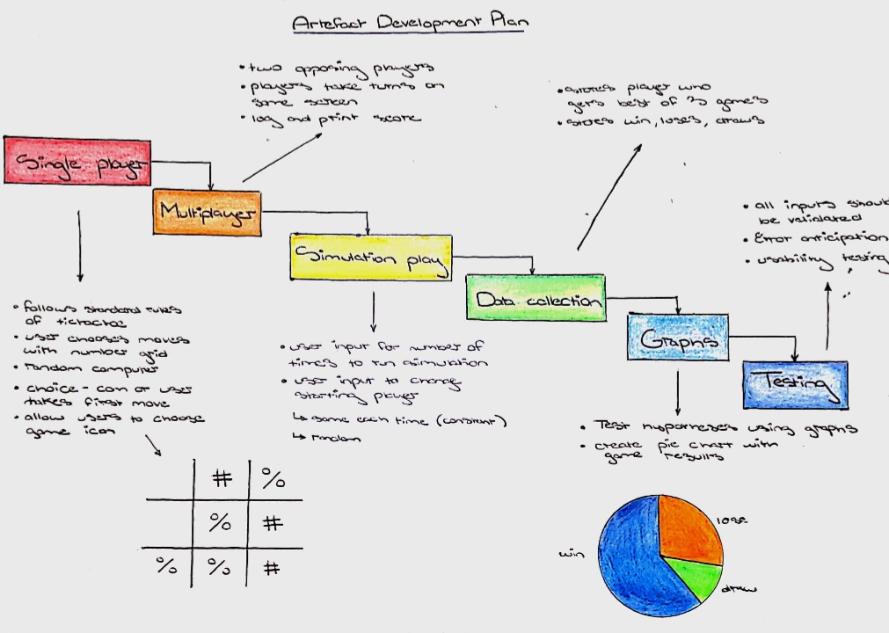
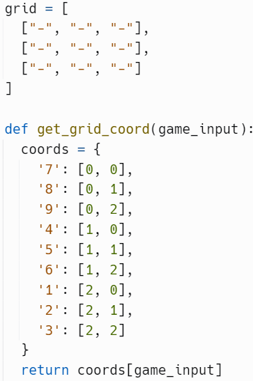
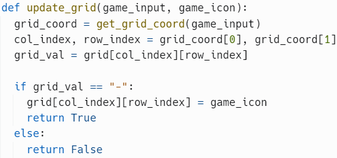
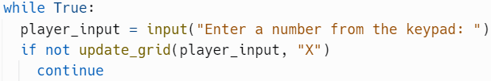

Investigate: I brainstormed ideas and chose the one I thought would be most suitable for the project. I looked at various projects for an idea of how the logic worked and how the code was structured. I was inspired by a project of tictactoe on Github that had each feature of the game organised by a function. Then, I researched into the probabilities behind the game.
Plan: The plan was created based on the basic and advanced requirements. My plan was to complete each section linearly eg. Create single player then create multiplayer. However, to keep on schedule, once I had a basic model, I would move on to the next section of the plan leaving uncompleted sections that I would go back to. After iterating, I left out the “best of 3 games” data as the game number would need to be divisible by 3, limiting the artefacts flexibility. Iterating again, I changed the plan to accept username input and starting position for simulation play.
Design: The system architecture involves functions for logic of the game, loops for collecting and organising data for graphs. After iterating, I changed the design of the grid halfway through the project for a better UI.

Create: I used a mix of agile and waterfall software development to create the artefact. Since I had static instructions, I created my plan based on waterfall methodology. However, as I encountered problems and thought of new features to add, I edited code from previous sections of the plan. To keep on schedule, once I had a basic model, I would move on to the next section of the plan leaving uncompleted sections that I would eventually go back to.
Evaluate: After updating the artefact, I checked the brief to ensure I was meeting all requirements. The original plan didn’t include statistical analysis, a requirement of the brief, so I changed the program so that it collected moves per game. Iterating again, I added titles, labels to graphs to achieve my 6th project objective.
Document: Throughout the entire project I made notes on how I altered aspects of the original plan and problems I faced. After creating artefact, I wrote up the report properly.
I came across this problem when testing simulation play. The initial algorithm I used for the computers to make a move used a for-loop that ran 9 times until the computer chose a move for an empty square on the grid. When simulating 10,000 games, I noticed that only 99, 987 games were finishing and the graph wasn’t created. As this problem kept occurring, I recognised a pattern. As most of the games worked and the issue didn’t appear for small volumes of games, I knew the issue involved probability. To solve the issue, I abstracted unnecessary information and decomposed the problem into each loop, function call and variable. When the functions and variables were working correctly, I noticed the fault in my design. Some games were not finishing as the computer had tried 9 times to find a move but had failed. There was a 99.9% that this would not happen. I changed the algorithm to use an infinite loop (while True) that would only break when a valid move was chosen by the computer, and it would work 100% of the time.
The code below allows a user or computer to place an X or O in the grid ie. make a move. It involves a nested list for the grid, two functions and a while loop. The nested list (grid) simulates the tictactoe grid. The get_grid_coord() function converts a number inputted by the user into a grid coordinate using an argument (game_input). The player inputs a number between 1 and 9, where each number represents a square on the grid. This function returns the correlating grid coordinate as a list eg. Centre: 5 -> [1, 1].
The update_grid() function substitutes the user’s game icon (X/O) into the desired square on the tictactoe grid. The first argument (game_input) is for the user’s inputted number and the second argument is for the game icon (X/O). The inputted number is converted into a grid coordinate using the first function get_grid_coord() and this is assigned to a variable (grid_coord). The returned list is split into col_index and row_index. The chosen square is assigned to the grid_val variable using the coordinates. The if-statement is used to check whether the square is already filled. If the square is empty, “-” will be replaced with the game icon (X/O) and the function will return True, otherwise it will return false.
I used a while-loop to obtain the required user input. The player is prompted to enter a number between 1 and 9, and if the chosen square is full the user will be asked to enter a number again until an empty square is chosen.
